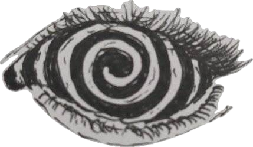
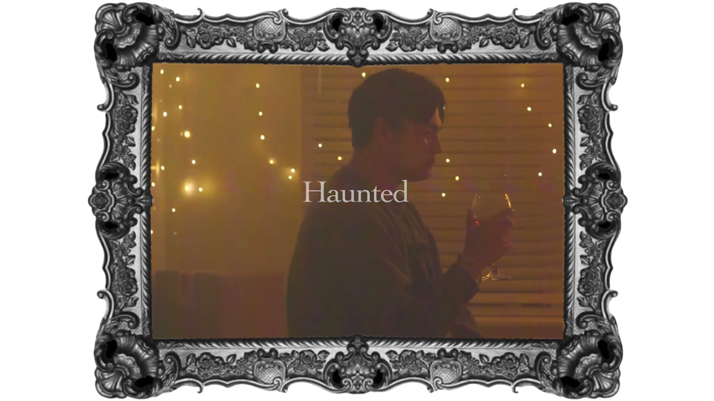
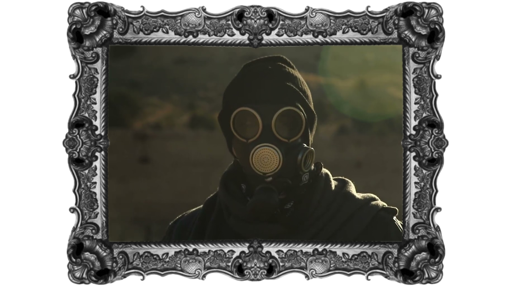
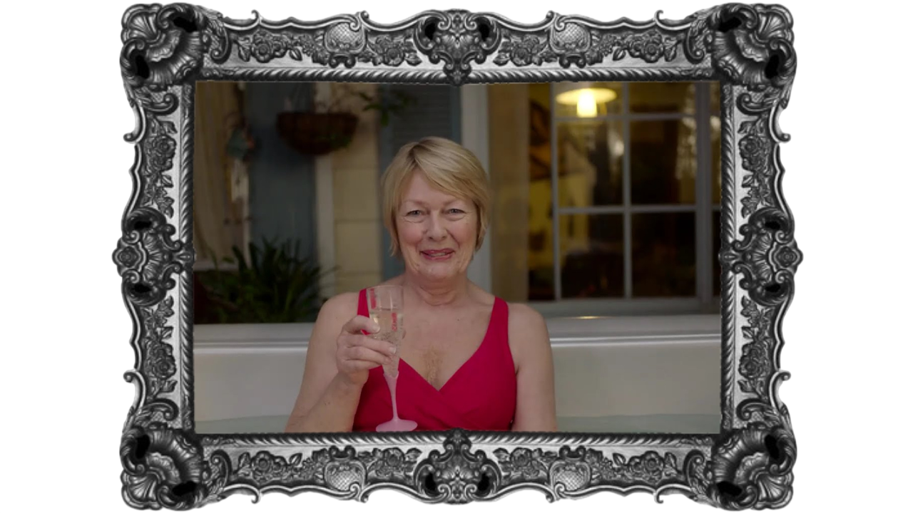
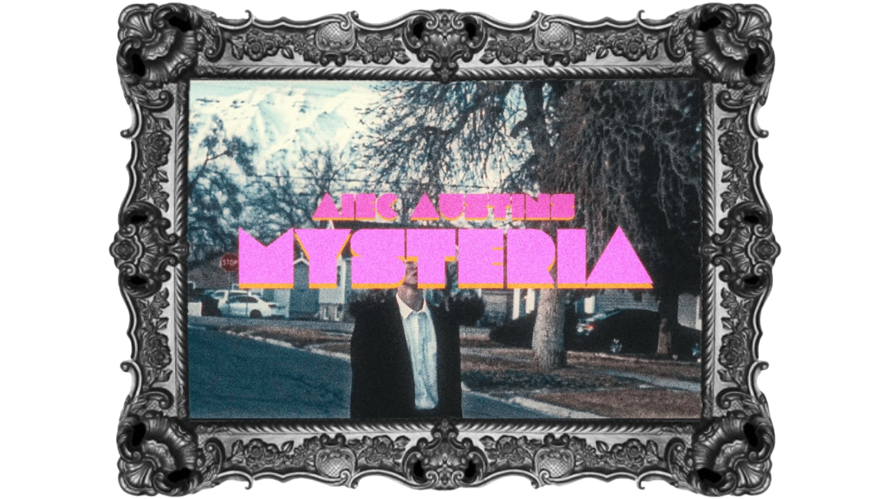
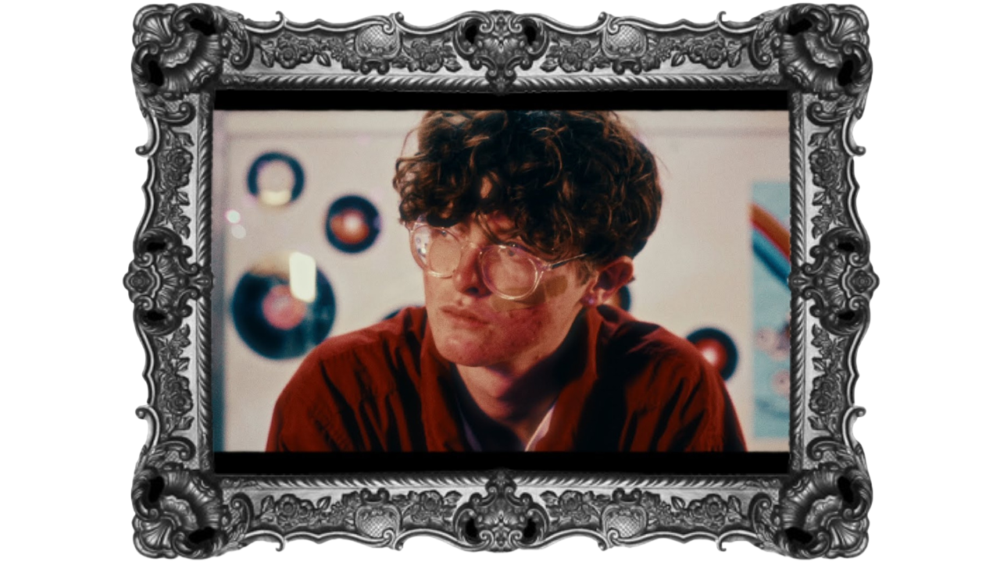
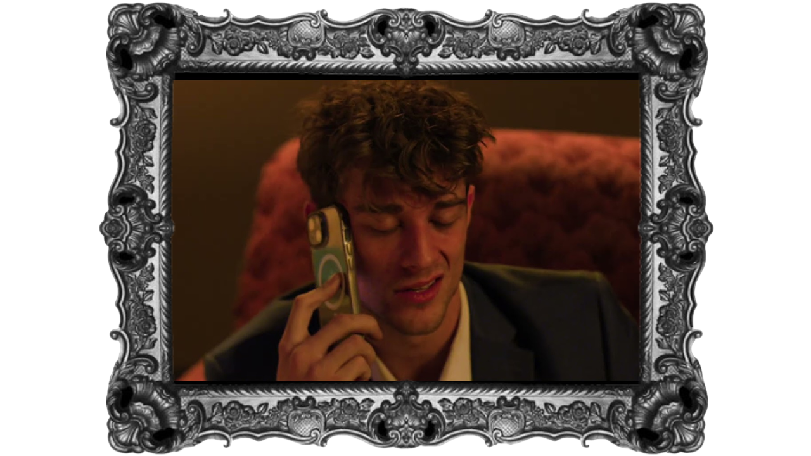
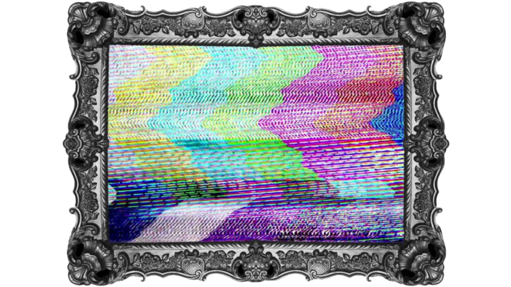

← back

Films

5 Steps of Love: Haunted
Published: July 23, 2024
Description: I was the Director of Photography for this project. I’ve enjoyed using visuals to further a film's story. It’s one of the reasons the director had asked me to be his DP. He wanted to showcase how the warmth of past love and memories can affect and cloud the perception of our own experiences. I recommended using lighting and shot temperature to contrast and bring to life the story my director sought to create.

Nothing’s Older -
Fan Music Video
Finished: November 2, 2025
Re-uploaded: February 2, 2026
Description: For this project, I was the Director of Photography. The director wanted the film to have a harsher look to it, almost resembling a post apocalyptic world. We used the harshness of the sun to our advantage to make her vision a reality. I made sure that the footage of the “stalker” had mostly close-ups to help add to the feeling that they were always there and close by despite our main character running away continuously throughout the video.

Grief in Silence
Original Publication:April 29, 2025
Re-uploaded: February 2, 2026
Description: I edited together the clips provided by Editstock for my class final. I had read the original script and logs before starting the edit, and immediately I got the feeling of this poor gentleman who was suffering the effects of grief on his own. So, when editing, I tried to use the shots at my disposal to showcase how despite being surrounded by people, the main character, Mr. Daley was drowning in the grief of losing his wife. My favorite part in the edit was when I made her laugh appear before she did. I think it emphasized how in his own head Mr Daley was despite being in a room full of people.

MYSTERIA
[Official Trailer]
Published: March 7, 2025
Description: I was the Director of Photography for this project. The director wanted to create a teaser for the musician's newest album. While the grain and coloring was done in post, we did use the darkening skies to add the moodiness the director wanted the trailer to have. I used quick movements to try and showcase the feelings of urgency and desperation we were trying to bring forth from the character.

Runnin’ Out of Time [Official Music Video]
Published: April 12, 2025
Description: For this project, I was the Director of Photography. The director wanted to use the video to further the story we began in the trailer. We used lighting to create a softer dream-like feel to the film. We were aiming to create something that really enhanced the feeling of running into someone you wish you hadn’t. My favorite part of working on this project was creating the “dizzying” look after he fell. It was a fun process to ensure everything was working in a way that enhanced the story the song was telling.

As Promised, Here I Am - Cinematography Final
Published: December 10, 2025
Description: I was the Gaffer for this project. The DP seemed to like the idea of creating a harsh contrast between the outside of the apartment and the inside with lighting. We used purple lights on the outside and warm orange for the inside which was used to reinstate how disconnected from the world Ciro was due to the grief that consumed him.

Purple Laces
Not Published - Being Edited
Description: For this project, I was the Director of Photography. The director wanted the film to resemble a 2000’s coming of age film. We debated using softer colored lighting, but I preferred the harsher color which is what we went with. The scene was meant to occur in a dark parking lot, so I added extra lighting to help add dimension to our actors.